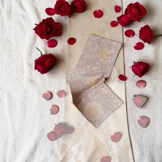
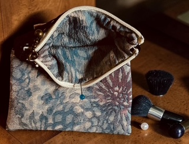

帯と古着からつくる、バッグと小物。
しまっていた布が、
また、お気に入りに。
帯の織り目も、古着の色合いも。
もとの布のよさを残して、
もう一度使えるかたちに仕立てています。
ひとつの布から、ひとつずつ。

01 — OBI TEXTILE帯から、テーブルランナーへ。生地の表情を、いつものテーブルに。
A SECOND LIFE FOR FABRIC
「この布、まだ使えるかも。」
ものづくりは、そこから。
使わなくなった帯を、花を飾るテーブルの一枚に。
古着を、お出かけに持ち歩くバッグに。
onlyyuukaは、布の柄や風合いを活かして、
日常で使える作品をつくっています。
SELECTED WORKS 01
布から生まれたもの。
飾る、持ち歩く、整える。
使う場面から、選んでみてください。
3作品を表示
掲載作品は制作例です。現在の販売状況は、購入先でご確認ください。

DETAILS MAKE THE DIFFERENCE.HOW WE REMAKE 02
仕立てる前から、
手をかける。
表から見える柄だけでなく、
布の状態や、内側の使いやすさまで。
素材に合わせて、ひとつずつ整えます。
- 01
ほどく
もとの形をほどき、布の状態を確かめる。
- 02
洗って、整える
素材に合わせて洗い、乾かしてから下準備。
- 03
使うかたちに仕立てる
柄の見え方や用途を考え、バッグや小物に。
MEET THE MAKER 03
つくる人も、
知ってもらえたら。
捨てるには惜しい布を、
また使ってもらえるものへ。
帯や古着、デニム、織物。onlyyuukaでは、使われなくなった布をバッグや小物、テーブルランナーに仕立て直しています。
同じ素材でも、切り取る場所で柄の見え方が変わります。その違いを活かしながら、使う場面を思い浮かべてつくっています。
BEFORE YOU CHOOSE 04
手に取る前に。
リメイク作品について、
知っておいていただきたいこと。
同じ柄のものを、もう一度つくれますか？
もとの布や柄の取り方によって、作品ごとに違いが生まれます。同じ素材での再制作が可能かどうかは、作品ごとにお問い合わせください。
リメイク素材の風合いは、どんな感じですか？
もとの素材の折り跡や風合いが残る場合があります。実物の状態が分かる写真や説明を、作品ごとにご確認のうえお選びください。
お手入れは、どうすればいいですか？
素材や仕立てによってお手入れ方法が異なります。洗濯の可否や色落ちへの注意など、作品ごとの案内をご確認ください。不明な場合は、洗う前にお問い合わせください。
作品はどこで購入できますか？
このページはHPのご提案用サンプルです。公開時には、運用するオンラインショップへのリンクを設置し、現在の価格・在庫をご確認いただけるようにします。
FIND YOUR FAVORITE
気になる一枚から、
はじめてみませんか。
作品のサイズや素材について。
購入前に、確かめたいことがあれば。
ご提案用：購入先・お問い合わせ先は公開前に設定します。